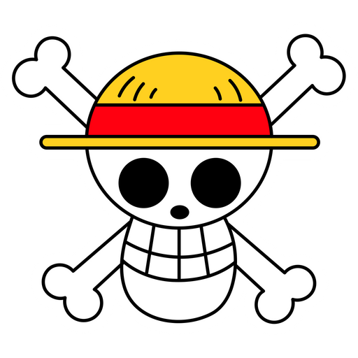

ONE PIECE
Welcome to the Straw Hat's Website
This is a website for the review of the anime One Piece. The show is about a group of pirates the Straw Hats who sale the sea looking for adventure and ultimately, to find the worlds greatest treasure, the One Piece. The One Piece is a treasure left by the first and only pirate king thus far Gol D. Roger and is actually a complete mystery. No one knows what this treaure actually is but the idea of the pirate king's long lost treasure is to good for any true pirate to ignore. The Straw Hat's crew consists of Monkey D. Luffy, their captain and a man who dreams of being the next pirate king, his first mate Roronoa Zoro, the navigator and cat burglar Nami, the marksman Usopp, the ships cook Black Leg Vinsmoke Sanji, the ships doctor raindeer Tony Tony Chopper, archeologist Nico Robin, shipwright and cyborg Franky, ship musician the Humming Swordsman Brook and fishman Jinbei helmsman and an ex warlord of the sea. In this world there are things called Devil Fruit that grant strange powers to the the person who eats them at the expense of their ability to swim. Luffy eat the Gum Gum Fruit which gave him the ability to strech his body as if it were rubber which he uses to great effect when protecting his friends. The Straw Hats may be a relatively new pirate crew but they are determined to find the One Piece and see Luffy become the pirate king.

- Company Credits: Toei Animation
- Release Date: October 20, 1999
- Genres: Action, Adventure, Animation
- Rating: TV-14
- Run Time: 14 days 18 hours (20 Seasons)